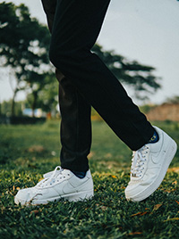
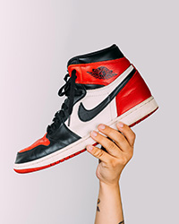
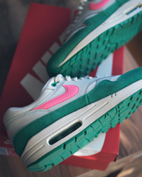
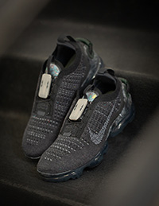

-
January 25, 1964
Founded in Eugene, Oregon, by Phil Knight who was a track runner at the University of Oregon and Bill Bowerman who was Knight’s coach.
-
1971
Bill Bowerman experiments and creates the waffle pattern for the sole of the shoes.
-
1971
The creation of the Nike swoosh.
-
1972
Nike signs their first athlete to an endorsement deal. A Romanian tennis player.
-
1972
Nike releases the Classic Cortez. This shoe was a big part of Nike’s foundation. It built upon the previous designs and combined to morph into a classic. This is a must have.
-
1982

The first release of the Air Force 1. It is a timeless silhouette that many people still love today. AF1’s are now offered in mid and high tops. They offer unmatched comfort. Additionally, they are a versatile shoe that many people want to have in their closet.
-
1984
Nike signs Jordan to a shoe deal. The Jordan brand is born.
-
1985

Jordan’s first sneaker is released. The Jordan 1. When it was first released people were stunned and amazed. The shoe turned heads. It was durable enough to play basketball in, but also stylish enough to wear out. After the release, everyone wanted to get their hands on a pair. This sneaker has proven to last and even today remains as a critical shoe to have in any collection.
-
1987

Tinker Hatfield released a masterpiece with the Air Max 1. It was the first shoe with a “window” into the sole. You can see the air bubble in the heel. It became an instant success and since it’s still very popular. The upper section has clean lines, creating a professional yet still sporty look. This shoe could be worn during almost any occasion, it is a must have.
-
2003
Nike signs Lebron James and Kobe Bryant to shoe deals. Signature shoes later follow.
-
2004
Nike purchases Converse for $309 million.
-
2017

Nike Air VaporMax is released. This is a different shoe than most of the others. It was building on technology that was seen in the Air Max 1 but expanded on it exponentially. The shoe features a midsole that is exclusively air pockets and translucent. It is lightweight, responsive, and sporty. Nike also uses flyknit on the upper which is a stitched upper that is extremely light.